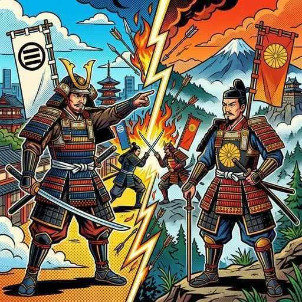
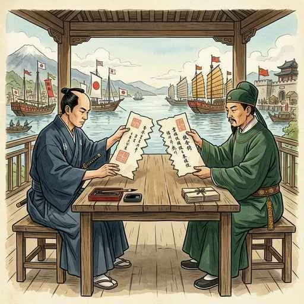

12. 室町幕府の成立と東アジアとの交流
鎌倉幕府が滅びた後、天皇みずからが政治を行う時代が訪れましたが、それは長くは続きませんでした。今回は、武士たちの支持を得た足利尊氏がどのように室町幕府を開いたのか、そして第3代将軍の足利義満が築いた東アジアとのダイナミックな交流の様子を解説します！
1. 建武の新政と南北朝の動乱
鎌倉幕府を滅ぼした後醍醐天皇（ごだいごてんのう）は、1334年に天皇が中心となって新しい政治を始めました。これを建武の新政（けんむのしんせい）と呼びます。
しかし、この政治は公家（貴族）ばかりを極端に優遇し、命がけで戦った武士たちの恩賞や慣習を無視したものだったため、全国の武士から強い不満が噴出しました。
① 南北朝時代（なんぼくちょうじだい）の始まり
武士たちの不満を代表して、足利尊氏（あしかがたかうじ）が兵を挙げ、後醍醐天皇の軍を破って京都を占領しました。
後醍醐天皇は京都を脱出して吉野（奈良県）の山の中に逃れ、そこで「南朝」を開きました。一方、足利尊氏は京都で別の天皇を立てて「北朝」を開きました。こうして、2人の天皇が同時に存在する南北朝時代（なんぼくちょうじだい）が始まり、約60年間にわたり全国の武士たちが二手に分かれて戦う内乱が続きました。

図1：京都（北朝）と吉野（南朝）に朝廷が分かれて対立した「南北朝時代」のイメージ
2. 室町幕府の確立と足利義満の政治
足利尊氏は1338年、北朝の天皇から征夷大将軍に任命され、京都に新しい武家政権である室町幕府を開きました。
この幕府を名実ともに安定させたのが、第3代将軍の足利義満（あしかがよしみつ）です。彼は以下の3つの大きな業績を残しました。
💡 将軍・足利義満の3大業績
- 南北朝の合一（1392年）：対立していた南朝と北朝を一つにまとめ、約60年続いた内乱を終わらせました。
- 「花の御所」の建設と支配強化：京都の室町に豪華な邸宅「花の御所」を建てて政治を行いました。また、将軍を補佐する最高職として管領（かんれい）を置き、強力な守護大名（しゅごだいみょう）たちを抑え込みました。
- 金閣（鹿苑寺）の建立：北山に、金箔をふんだんに使った豪華な「金閣」を建てました（北山文化）。
図2：足利義満が建立した、北山文化を代表するきらびやかな「金閣」のイメージ
3. 倭寇（わこう）の取り締まりと勘合貿易（日明貿易）
当時、東アジアの海では、日本の西国武士や沿岸の住民を含む海賊・非公式商人グループである倭寇（わこう）が活動し、中国（明）や朝鮮の沿岸を襲っていました。
中国を統一した「明（みん）」は、倭寇の取り締まりを日本（室町幕府）に強く求めました。これに対して足利義満は明との間で正式な国交を結び、貿易を開始しました。これが勘合貿易（かんごうぼうえき／日明貿易）です。
① 勘合（かんごう／勘合符）の仕組み
明との貿易船には、勘合（かんごう）と呼ばれる帳簿の割札を持たせました。日本側と明側でそれぞれ半分に割った札を持ち合い、港でぴったり合うかどうかを確認することで、正式な貿易船と倭寇（海賊）を厳しく区別したのです。

図3：貿易船が倭寇ではないことを証明するために使われた「勘合（割札）」の仕組みイメージ
② 貿易でやり取りされたもの
日本は明へ、銅や刀剣、硫黄、扇などの美術工芸品などを輸出しました。一方、明からは、日本国内に流通させるための大量の明銭（みんせん）、高級衣類の原料となる生糸・絹織物、書物、陶磁器などを輸入しました。これにより日本国内で貨幣（お金）を使う経済が一気に浸透していきました。
4. アジア諸国の動きと琉球王国の誕生
この時代、東アジアでは各国が独自の交流を深めていました。
① 朝鮮国（李氏朝鮮）
高麗を倒した李成桂が「朝鮮」を建国しました。幕府は朝鮮とも正式な国交を結び、倭寇を取り締まる代わりに、日本へ仏教の経典（大蔵経）や、高精度な印刷技術である金属活字などがもたらされました。
② 琉球王国（りゅうきゅうおうこく）
沖縄の本島では、1429年に中山の王であった尚巴志（しょうはし）が対立する勢力を統一し、琉球王国を建国しました。首里城を拠点とし、要の港から日本・明・朝鮮・東南アジアを結ぶ中継貿易（ちゅうけいぼうえき）を行って莫大な富を築き、独自の豊かな文化を育みました。
🔥 この単元のテスト対策・暗記のコツ
-
★
建武の新政（1334年）の失敗理由：
・記述問題の定番です。「公家（貴族）ばかりを優遇し、武士の慣習を無視したため、武士の不満を招いた」と答えられるように整理しておきましょう。 -
★
足利義満（第3代将軍）の年号暗記：
・1392年（「いざ国合一、南北朝」）に南北朝を合一。この年はテストに非常によく出ます！ -
★
勘合貿易（日明貿易）の仕組み：
・目的：倭寇（海賊）と正式な貿易船を区別するため。
・使用したものは、勘合（割札）。
・明から輸入した、明銭や、生糸は、日本の経済や産業に決定的な影響を与えた超重要キーワードです！